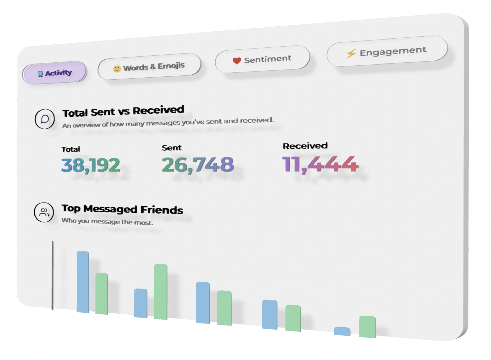
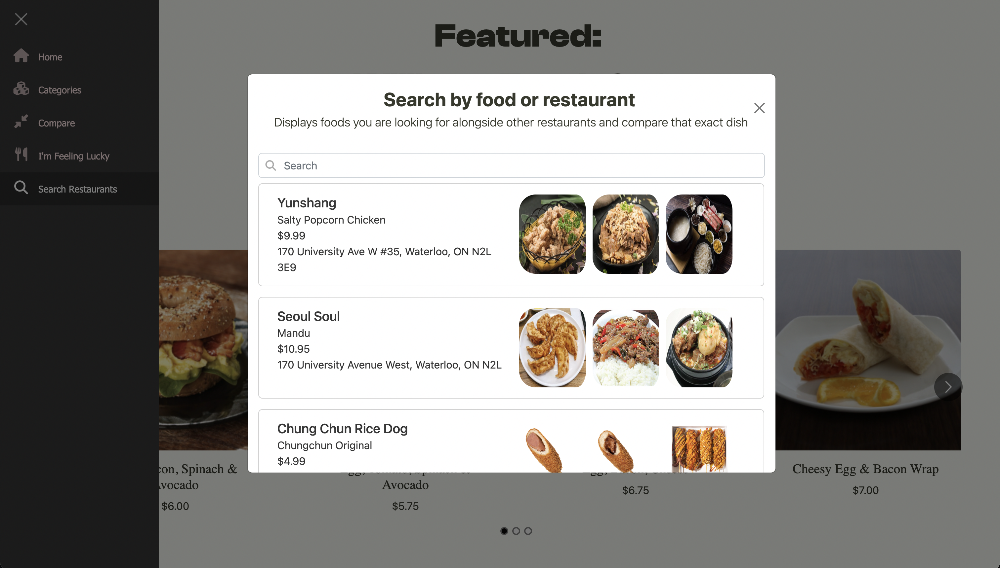
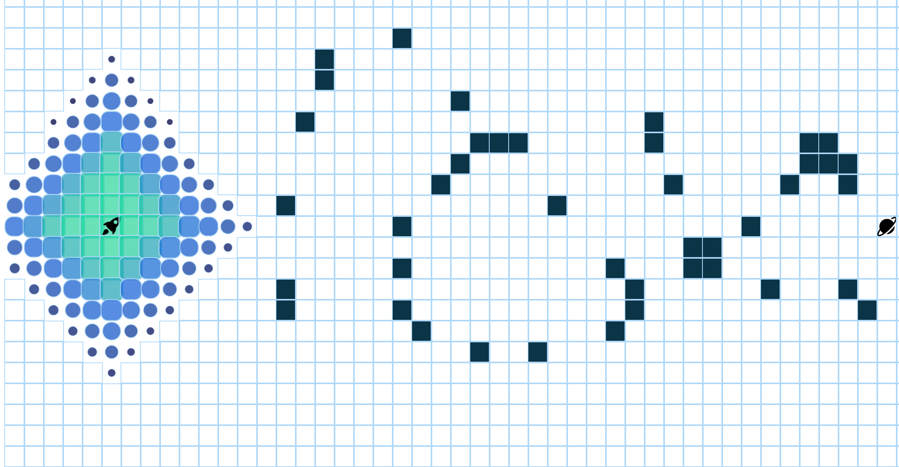

Ghosted
Designed a full stack web app that goes through your iMessage history and provides
an entire recap of your texting history, relationships, favourite words & emojis, and group chats.
This app will help you rediscover relationships... or break them. Created using Node.js, React, and SQLite.

Zesty Souffle
Built a React application to compare, filter, search, and view restaurants and their menu items within the University of
Waterloo area. Explore all of the restaurants within the University Plaza, and decide where to go for your next meal!

Pathfinding Visualizer
Designed a visually stunning visualizer for pathfinding algorithms using VanillaJS, HTML, and CSS.
The visualizer showcases algorithms like Dijkstra's, DFS, BFS, and Bellman-Ford, offering an intuitive and engaging experience for users.

Spotify Playlist Generator
Select tracks from your most recent listened songs, and watch as it crafts custom playlists tailored specifically
to your musical taste. Using JavaScript, HTML, CSS, and integrating the Spotify API, my project seamlessly integrates with your Spotify
account to create personalized playlists that are perfect for your unique musical preferences.
Youtube Ad Skip Chrome Extension
I developed a custom Youtube ad skipper Chrome extension using HTML, CSS, and JavaScript.
With just a click, you can also enjoy uninterrupted viewing without the hassle of annoying Youtube ads.
iOS News App
An iOS multi-feature news application that fetches the latest news from newsapi.org.
Created with Swift and SwiftUI.
Personal Website
Welcome to my personal website!
Learn about me, projects I've done, experiences I've lived, and watch my volleyball highlights!
Created using Angular.